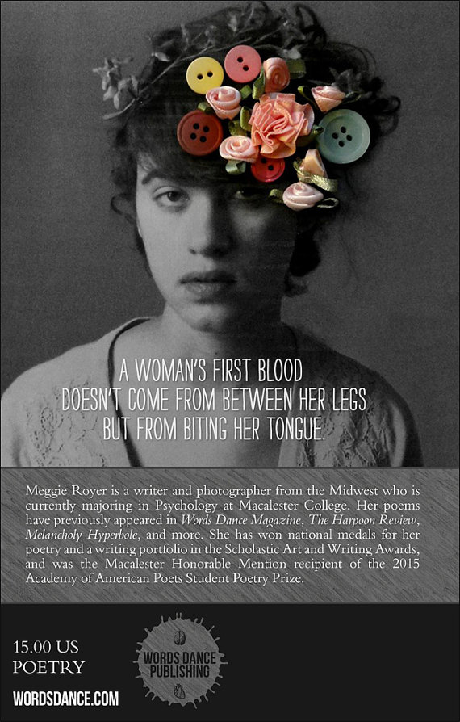

-
Meggie Royer Survival Songs
The morning after I killed myself, I woke up.
I made myself breakfast in bed. I added salt and pepper to my eggs and used my toast for a cheese and bacon sandwich. I squeezed a grapefruit into a juice glass. I scraped the ashes from the frying pan and rinsed the butter off the counter. I washed the dishes and folded the towels.The morning after I killed myself, I fell in love. Not with the boy down the street or the middle school principal. Not with the everyday jogger or the grocer who always left the avocados out of the bag. I fell in love with my mother and the way she sat on the floor of my room holding each rock from my collection in her palms until they grew dark with sweat.
I fell in love with my father down at the river as he placed my note into a bottle and sent it into the current. With my brother who once believed in unicorns but who now sat in his desk at school trying desperately to believe I still existed...
The morning after I killed myself, I tried to unkill myself, but couldn’t finish what I started.
Survival Songs Meggie Royer
Meggie Royer Survival Songs
Survival Songs is a rerelease of Meggie Royer's first collection of poems, which was a finalist in the GoodReads Choice Awards for the Best Poetry Book of 2013. The poems and prose in Survival Songs are clear and concise. Grounded through experiences, Royer's evocative poems cast a knowing eye on the wider world, telling us what it’s like to be displaced and replaced, used and abused. Her poems are suffused with a graceful, mysterious pathos and longing. Survival Songs is a remarkable debut.
Survival Songs can be purchased here. -
Meggie Royer Healing Old Wounds with New Stitches
{an excerpt from Polaroid Circa 1965}
. . .
I dream in flickering film,
all my loved ones passing mefore me
on a grainy reel
It's only when I open my eyes
that the shutter closes and all of us
are saved for another day. No one
lets me leaf through their photo albums
anymore. They're all afraid my fingerwill land on their husband or son
or daughter. At least that's what they tell me.
They don't know that I know
They'd rather have it land on anyone
but themselves.
That's why I started covering my face
In pictures, too.Let there be scars
Let them come
They are just anatomical proof
of survivalMeggie Royer Healing Old Wounds with New Stitches
Meggie Royer Healing Old Wounds with New Stitches
Healing Old Wounds With New Stitches is the second book of poetry by Meggie Royer. This book is broken into two parts: the first about grief, loss, and pain, the second about recovery and survival.
Healing Old Wounds With New Stitches can be purchased here. -
Meggie Royer The No You Never Listened To
EVEN IF
And even if her whole body looks like a watercolor painting, that doesn’t mean you can dip your hands into the palettes of her hips and brush between her legs. And even if her smile seems as inviting as a chandelier, don’t try hanging yourself from the ceiling of her thighs just to get a glimpse inside. And even if her dress is already halfway off, do the math. The two letters that make up “No” will never equal the three letters of a “Yes.”And even if you’re hungry like a wolf, lust isn’t love, so keep your paws and teeth to yourself. And even if there’s drinking involved, remember she isn’t drunk on you so don’t try to put her further under the influence, especially when the influence is you. And even if you want to stick your tongue down her throat like a metal pole in winter, that doesn’t mean you can’t try getting yourself unpeeled first. Thaw your greediness before letting yourself get frozen in the wrong path.
And even if she doesn’t look like your narrow-minded image of a woman, then maybe the magnifying glass you’re using is cracked and dirty and raping her certainly won’t turn her into the person you want her to be. And even if she’s passed out and no one else is around, try “passing” on the opportunity to ruin her life instead. And even if you think saying a prayer before breaking down the church of her body is going to save you, it won’t.
Because you don’t deserve her forgiveness. And even if you’re going to say later that she was asking for it, she wasn’t. You were just too self-absorbed to pay attention to her answer.
A woman’s first blood doesn’t come from between her legs but from biting her tongue.
The No You Never Listened To Meggie Royer
Meggie Royer The No You Never Listened To
"Meggie typically takes the universal and makes it personal. With The No You Never Listened To, she takes the personal and makes it universal. As a sexual assault survivor, Meggie is well-acquainted with trauma: the aftermath, the guilt, the anger. She has never shied away from taking Hemingway’s advice – write hard and clear about what hurts – and that strength has never been more of an asset than with this body of work.
em>The No You Never Listened To is the book you will wish you’d had when trauma climbed into your bed. It is the book you will give to friends who are dragged from their “before” into a dark and terrifying “after”. And yes, it is the book you will wish didn’t exist.
But it is also the one that will remind you, in your darkest moments, where the blame really belongs. It will remind you that your memory will not always be an enemy. And it will remind you that none of us have ever been alone in this.”
– Claire Biggs, To Write Love on Her Arms Editor/Writer
The No You Never Listened To can be purchased here. -
Meggie Royer Unrequited
Unrequited love is exhausting, almost physically draining, like teetering on the edge of recovery after being home sick for two weeks. But the problem with unrequited love is that there’s no cure, no chicken soup or bedrest to make you feel better again. The heart is a fickle organ, the most unpredictable in the body, and it wants what it wants for sometimes unknowable reasons.
Imagine what it must have been like for Adam and Eve, the first man and woman, just trying out their hearts for the first time. No instruction manual, no step-by-step rules that laid out the foundation and the uses. And if Adam didn’t love Eve, or vice versa, there would be no one else to project that unused love onto, no placebo.
When you see the one you love with someone else, it’s all you can do not to rip your heart out and throw it on the floor and declare your love to the whole world, to smash every plate in the cupboard or paint the walls with their name. It’s gut-wrenching, like asking for the whole universe and only receiving the stars instead.
Poems about unrequited love.
What to do when they come back.
What to do when they don't.Meggie Royer Unrequited
Meggie Royer Unrequited
Poems about unrequited love. What to do when they come back. What to do when they don't.
Unrequited can be purchased here. -
missed connection. Meggie Royer
Losing Touch
The first day of class, the professor tells us about a man who has no memory, who forgets something as soon as he sees it. We immediately begin to discuss all the particulars, wonder how he could possibly even talk if every word vanished as soon as it appeared. And I thought of fireflies flashing Morse code in the dark, or how the thunder makes love so violently to the lightning that every crash of their bodies can be heard from above.How language always fails us when we need it most, like holding the hand of a woman just run over by a car, the blood pooling into her skirt, her mouth opening and closing like a fish. Brutal, to witness her see the world for the last time, to take in the sky deepening into pink ash over the horizon, and her lover, two hours away, trying desperately to make it in time on the subway. The professor tells us Freud would eat that up, would say something witty about that man’s
capabilities for psychoanalytic therapy, or Jung would comment on the state of his collective unconscious. But all I can think about is how, unlike the woman whose heart is slowly failing her, crushed underneath the steering wheel, everything that man sees he sees for the first time. Every time his wife steps into a room, he would be laying his eyes upon her for the very first time. For him, falling in love wouldn’t be a luxury; it would be a daily occurrence.
The lessons your mother never gave you. About how to fight back, about men who are more salt than honey, about loving yourself, about watching someone else love the one you love.
missed connection. Meggie Royer
Meggie Royer missed connection.
The lessons your mother never gave you. About how to fight back, about men who are more salt than honey, about loving yourself, about watching someone else love the one you love.
missed connection. can be purchased here.